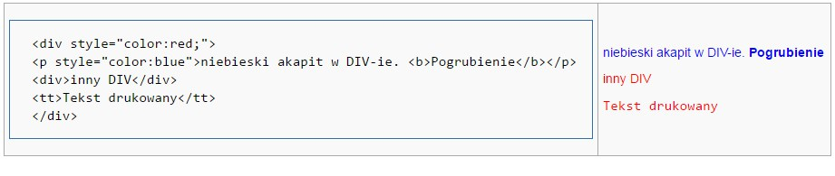

Dziedziczenie

Dziedziczenie - proces w którym właściwości CSS jednego znacznika przechodzą na inne zagnieżdżone w nim znaczniki Ogólne reguły: Dziedziczeniu nie podlegają właściwości dotyczące: położenia na stronie, marginesów, dopełnień, obramowań Precyzja, który styl weźmie górę -selektor znacznika waga:1 -selektor klasy waga:10 -selektor identyfikatora waga:100 -selektor lokalny waga:1000 Ignorujemy precyzję wpisując !important W przypadku gdy dwa style mają tą samą precyzję, wybierany jest ten ostatni.